Лабораторная работа 1
Параллельное численное интегрирование
методом правых прямоугольников
Две реализации на C++: POSIX Threads и std::thread
| Параметр | Значение |
|---|---|
| Выполнили | Виткулевский Т. В. Волков К. В. |
| Группа | АВТ-412 |
| Преподаватели | Ландовский В. В., доцент, к. т. н. кафедры АСУ; Дворецкая В. К., ассистент кафедры АСУ |
| Вариант | Правые прямоугольники, f(x) = (1+x²)/(x³√(2+x)), [2;5] |
| Дата эксперимента | 20 октября 2026 года |
| Основной запуск | N = 20,000,000; p = 8; p_max = 16; 7 повторов |
Цель работы — освоить численное интегрирование, обоснованный выбор шага и оценку погрешности, реализовать параллельное вычисление двумя средствами C++ и исследовать масштабируемость.
Получено I_N = 0.450968532781073; аналитический эталон I = 0.4509685503223266. Абсолютная ошибка составляет 1.75413e-08. Оба API дают одинаковый результат в пределах округления.
1 Постановка задачи и численный метод
Вычисляется определённый интеграл I = ∫₂⁵ (1+x²)/(x³√(2+x)) dx. Функция непрерывна и положительна на всём отрезке, поэтому интеграл совпадает с площадью под её графиком.
Формула правых прямоугольников
Отрезок разбивается на N равных частей: h = (b−a)/N = 3/N. На каждом подотрезке высота прямоугольника берётся в правом конце: xi = a+ih, i = 1,…,N.
I_N = h * sum(f(a + i*h), i=1..N) В коде: i=0..N-1, узел x = a + (i+1)*h
Функция убывает, поэтому правые прямоугольники занижают интеграл. Параллелизация меняет порядок суммирования, но не сетку узлов и не формулу метода.
Сопоставление погрешностей методов задания
| Метод | Порядок | Граница |I−I_N| | Ограничение N |
|---|---|---|---|
| Левые / правые прямоугольники | O(h) | L h M₁ / 2 | N ≥ 1 |
| Средние прямоугольники | O(h²) | L h² M₂ / 24 | N ≥ 1 |
| Трапеции | O(h²) | L h² M₂ / 12 | N ≥ 1 |
| Симпсон | O(h⁴) | L h⁴ M₄ / 180 | N чётное |
| Ньютон–Котес 3/8 | O(h⁴) | L h⁴ M₄ / 80 | N кратно 3 |
Здесь L = b−a, Mₖ = max |f⁽ᵏ⁾(x)| на [a;b]; для соответствующей границы нужна непрерывная производная указанного порядка. В строке Ньютона–Котеса рассматривается составная формула 3/8 с интерполяционным полиномом третьей степени. В программе по варианту реализованы только правые прямоугольники.
2 Шаг интегрирования и оценка погрешности
Представим f(x) = (1/x + 1/x³) / √(x+2). Тогда производная имеет вид:
f'(x) = -(x^-2 + 3*x^-4)/sqrt(x+2)
-(x^-1 + x^-3)/(2*(x+2)^(3/2))Каждое слагаемое в |f′(x)| положительно и убывает при x > 0. Максимум на [2;5] достигается при x = 2: M₁ = 33/128 = 0,2578125.
|I - I_N| <= (b-a)*h*M1/2 = 297/(256*N) = 1.16015625/N N >= ceil(1.16015625/eps), h = 3/N
| Требуемая ε | Достаточное N | Шаг h | Граница ошибки |
|---|---|---|---|
| 1e-03 | 1161 | 2.583979e-03 | 9.992733e-04 |
| 1e-05 | 116016 | 2.585850e-05 | 9.999968e-06 |
| 1e-07 | 11601563 | 2.585858e-07 | 1.000000e-07 |
Для эксперимента N = 20,000,000, h = 1.500000e-07, теоретическая граница равна 5.80078125e-08. Это оценка ошибки квадратуры в точной арифметике; при очень малом шаге дополнительно действует округление double.
Аналитический эталон и независимая проверка
Подстановка t = √(x+2) сводит интеграл к рациональной функции 2/(t²−2) + 2/(t²−2)³. Первообразная:
F(x) = 35/(32*sqrt(2))*ln((sqrt(x+2)-sqrt(2))/(sqrt(x+2)+sqrt(2)))
+ sqrt(x+2)*(3/(16*x) - 1/(4*x*x))
I = F(5) - F(2)Эталон, вычисленный Decimal с точностью 60 значащих цифр:
0.450968550322326660168633675195179549577893014459770257519547
Независимая составная формула Симпсона на 16 384 частях в арифметике Decimal отличается от аналитического эталона на 5.030e-18. Это контроль эталона, а не замена метода варианта.
Оценка Рунге
Порядок метода q = 1. Для уточнённого результата I₂N оценка Рунге равна |I₂N−I_N|/(2¹−1) = |I₂N−I_N|; для грубого I_N асимптотическая оценка вдвое больше. Наблюдаемый порядок вычисляется как log₂(|I−I_N|/|I−I₂N|).
3 Диаграмма деятельности
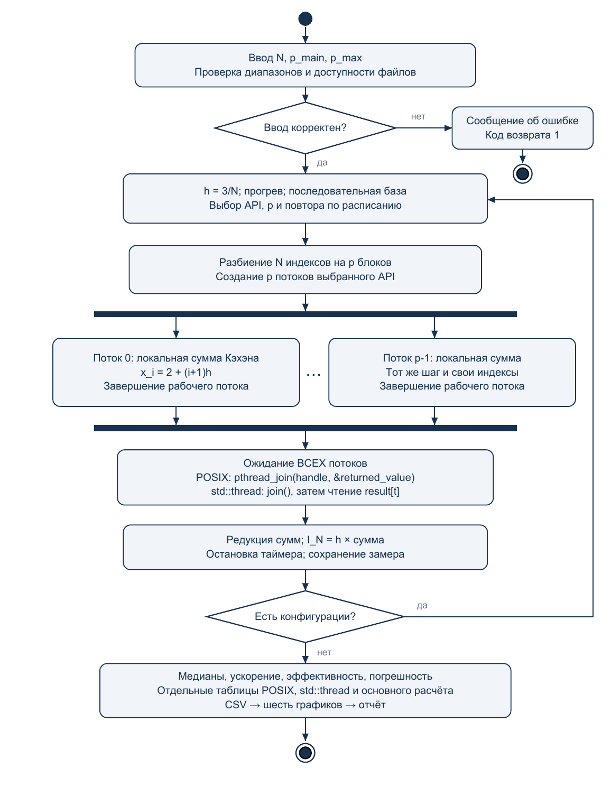
4 Организация программы
Распределение вычислений
Для p потоков q = N div p, r = N mod p. Поток t получает начало lₜ = tq + min(t,r) и конец uₜ = lₜ + q + [t < r]; индексы обрабатываются на полуинтервале [lₜ,uₜ). Соседние блоки стыкуются без пропусков и перекрытий, а их размеры различаются не более чем на единицу.
POSIX Threads
pthread_create передаёт потоку структуру с границами блока и шагом. Рабочая функция выделяет double в куче, записывает локальную сумму и возвращает указатель; основной поток получает именно возвращённое значение вызовом pthread_join(handle, &raw). После чтения unique_ptr освобождает память; указатель на локальную переменную стека не возвращается.
std thread
Функция worker(first, last, a, h, double& result) получает параметры отдельно. В конструктор std::thread передаются first, last, A, h и std::ref(results[t]); структура параметров не используется. Каждый поток пишет только в свой элемент заранее выделенного массива, а чтение происходит после join, поэтому гонки данных нет.
Точность и обработка ошибок
Локальные суммы и окончательная редукция используют суммирование Кэхэна. При частичном сбое создания потоков уже запущенные потоки завершаются до освобождения их аргументов; неуспешный pthread_join приводит к диагностике и остановке вместо обращения к недействительным данным.
| Файл | Назначение |
|---|---|
| integration.hpp / integration.cpp | Интерфейс, функция варианта, сетка, последовательная сумма, эталон |
| posix.cpp | POSIX-реализация и получение результата через pthread_join |
| std_thread.cpp | Реализация std::thread с отдельными аргументами |
| main.cpp | Ввод, проверка, измерения, таблицы, экспорт CSV, самопроверка |
Использована предоставленная Pthreads-win32 2.9.1, pthreadVC2.lib и pthreadVC2.dll x64. Для современного MSVC определено HAVE_STRUCT_TIMESPEC после подключения time.h, чтобы старый pthread.h не переопределял timespec из UCRT.
5 Методика эксперимента и проверка
| Параметр | Значение |
|---|---|
| Процессор | 12th Gen Intel(R) Core(TM) i5-12450H |
| ОС и число логических потоков | Windows x64; 12 |
| Компилятор и сборка | MSVC 14.51.36231, Visual Studio 18; Release x64, оптимизация /O2 |
| Число разбиений | 20,000,000 |
| Основное / максимальное число потоков | 8 / 16 |
| Повторы и прогрев | 7 повторов; один прогрев каждой конфигурации |
| Таймер и статистика | std::chrono::steady_clock; медиана |
| Порядок измерений | API и p перемешиваются между повторами, seed 412 |
Измерение охватывает выделение рабочих массивов, создание потоков, вычисление, join, редукцию и освобождение временных ресурсов. Консольный вывод, запись CSV, прогрев и вычисление погрешности вынесены за измеряемый участок. Однопоточная база каждого API также создаёт один рабочий поток; прямой последовательный цикл измерен отдельно.
S_API(p) = T_API(1) / T_API(p) E_API(p) = S_API(p) / p * 100% S_ideal(p) = p S_direct(p) = T_direct / T_API(p)
Короткие измерения зависят от планировщика, фоновой нагрузки и частоты процессора. Небольшое превышение 100 % на отдельных конфигурациях отражает отличие условий исполнения от однопоточной базы и не доказывает устойчивое сверхлинейное масштабирование.
Проверки корректности
Встроенный --self-test проверяет N = 1, 2, 7, 31, 1000, 10000 и допустимые p до 8: покрытие всех индексов, совпадение обеих технологий с последовательной суммой, границу ошибки и первый порядок сходимости. Отдельный Python-скрипт подтвердил медианы, ускорения и эффективность всех 32 строк таблицы по 231 исходному замеру, а также отклонение девяти некорректных вариантов командной строки.
Максимальный размах значений интеграла между всеми записанными запусками: 5.551e-17. Это на много порядков меньше ошибки дискретизации; итог всех проверок — PASS.
6 Основной результат и исследование точности
| Режим | p | Время, с | Интеграл | Tseq / Tp |
|---|---|---|---|---|
| direct | 1 | 0.079467800 | 0.450968532781073 | 1.0000 |
| POSIX | 8 | 0.021008500 | 0.450968532781073 | 3.7826 |
| std::thread | 8 | 0.021158000 | 0.450968532781073 | 3.7559 |
В этой таблице основание ускорения — прямой последовательный цикл. В сводных таблицах следующего раздела основание — один рабочий поток соответствующей технологии; поэтому значения ускорений отличаются.
Абсолютная погрешность и сходимость
| N | h | I_N | |I−I_N| | Порядок |
|---|---|---|---|---|
| 10 | 3.00e-01 | 0.417641634018 | 3.3327e-02 | 0.96263 |
| 100 | 3.00e-02 | 0.447477943389 | 3.4906e-03 | 0.99636 |
| 1000 | 3.00e-03 | 0.450617901686 | 3.5065e-04 | 0.99964 |
| 10000 | 3.00e-04 | 0.450933469578 | 3.5081e-05 | 0.99996 |
| 100000 | 3.00e-05 | 0.450965042089 | 3.5082e-06 | 1.00000 |
| 1000000 | 3.00e-06 | 0.450968199497 | 3.5082e-07 | 1.00000 |
| 20000000 | 1.50e-07 | 0.450968532781 | 1.7541e-08 | 1.00000 |
Оценка Рунге и теоретическая граница
| N | Рунге для I₂N | Граница для I_N | Относительная ошибка I_N |
|---|---|---|---|
| 10 | 1.62262e-02 | 1.16016e-01 | 7.39008e-02 |
| 100 | 1.74089e-03 | 1.16016e-02 | 7.74024e-03 |
| 1000 | 1.75280e-04 | 1.16016e-03 | 7.77546e-04 |
| 10000 | 1.75399e-05 | 1.16016e-04 | 7.77898e-05 |
| 100000 | 1.75411e-06 | 1.16016e-05 | 7.77933e-06 |
| 1000000 | 1.75412e-07 | 1.16016e-06 | 7.77937e-07 |
| 20000000 | 8.77063e-09 | 5.80078e-08 | 3.88968e-08 |
С ростом N ошибка убывает, а наблюдаемый порядок приближается к единице. Отрицательный знак I_N−I согласуется с убыванием функции; заданная теоретическая граница выполнена для каждой проверенной сетки.
7 Сводные таблицы результатов
POSIX
| Потоки | Время, с | Результат | Ускорение | Эффект., % |
|---|---|---|---|---|
| 1 | 0.080652900 | 0.450968532781073 | 1.0000 | 100.00 |
| 2 | 0.040158300 | 0.450968532781073 | 2.0084 | 100.42 |
| 3 | 0.027054300 | 0.450968532781073 | 2.9811 | 99.37 |
| 4 | 0.021490400 | 0.450968532781073 | 3.7530 | 93.82 |
| 5 | 0.030932500 | 0.450968532781073 | 2.6074 | 52.15 |
| 6 | 0.021867600 | 0.450968532781073 | 3.6882 | 61.47 |
| 7 | 0.018835600 | 0.450968532781073 | 4.2819 | 61.17 |
| 8 | 0.021008500 | 0.450968532781073 | 3.8391 | 47.99 |
| 9 | 0.020278200 | 0.450968532781073 | 3.9773 | 44.19 |
| 10 | 0.018785200 | 0.450968532781073 | 4.2934 | 42.93 |
| 11 | 0.019698000 | 0.450968532781073 | 4.0945 | 37.22 |
| 12 | 0.017410200 | 0.450968532781073 | 4.6325 | 38.60 |
| 13 | 0.019271800 | 0.450968532781073 | 4.1850 | 32.19 |
| 14 | 0.018047000 | 0.450968532781073 | 4.4690 | 31.92 |
| 15 | 0.019723500 | 0.450968532781073 | 4.0892 | 27.26 |
| 16 | 0.019088000 | 0.450968532781073 | 4.2253 | 26.41 |
Ускорение рассчитано относительно одного рабочего потока POSIX. Данные — медианы семи повторов; все исходные времена сохранены в results/raw.csv.
7 Сводные таблицы результатов продолжение
std::thread
| Потоки | Время, с | Результат | Ускорение | Эффект., % |
|---|---|---|---|---|
| 1 | 0.084935700 | 0.450968532781073 | 1.0000 | 100.00 |
| 2 | 0.041590000 | 0.450968532781073 | 2.0422 | 102.11 |
| 3 | 0.027684100 | 0.450968532781073 | 3.0680 | 102.27 |
| 4 | 0.022156100 | 0.450968532781073 | 3.8335 | 95.84 |
| 5 | 0.025214600 | 0.450968532781073 | 3.3685 | 67.37 |
| 6 | 0.023120400 | 0.450968532781073 | 3.6736 | 61.23 |
| 7 | 0.019897000 | 0.450968532781073 | 4.2688 | 60.98 |
| 8 | 0.021158000 | 0.450968532781073 | 4.0144 | 50.18 |
| 9 | 0.019706200 | 0.450968532781073 | 4.3101 | 47.89 |
| 10 | 0.017189600 | 0.450968532781073 | 4.9411 | 49.41 |
| 11 | 0.019558900 | 0.450968532781073 | 4.3426 | 39.48 |
| 12 | 0.017931700 | 0.450968532781073 | 4.7366 | 39.47 |
| 13 | 0.018959800 | 0.450968532781073 | 4.4798 | 34.46 |
| 14 | 0.019339400 | 0.450968532781073 | 4.3918 | 31.37 |
| 15 | 0.018025900 | 0.450968532781073 | 4.7119 | 31.41 |
| 16 | 0.019138900 | 0.450968532781073 | 4.4379 | 27.74 |
Ускорение рассчитано относительно одного рабочего потока std::thread. Данные — медианы семи повторов; все исходные времена сохранены в results/raw.csv.
8 Разброс измерений и идеальная эффективность
| p | POSIX Q1–Q3, мс | std Q1–Q3, мс | POSIX S/p | std S/p |
|---|---|---|---|---|
| 1 | 80.504 – 82.701 | 83.231 – 91.306 | 1.0000 | 1.0000 |
| 2 | 39.893 – 40.410 | 40.127 – 41.899 | 1.0042 | 1.0211 |
| 3 | 26.897 – 29.059 | 27.193 – 29.792 | 0.9937 | 1.0227 |
| 4 | 20.463 – 27.830 | 21.902 – 22.749 | 0.9382 | 0.9584 |
| 5 | 24.971 – 32.873 | 24.615 – 31.433 | 0.5215 | 0.6737 |
| 6 | 21.025 – 29.720 | 21.267 – 28.113 | 0.6147 | 0.6123 |
| 7 | 18.568 – 22.397 | 19.283 – 22.067 | 0.6117 | 0.6098 |
| 8 | 19.058 – 21.564 | 19.195 – 22.990 | 0.4799 | 0.5018 |
| 9 | 19.313 – 24.198 | 19.093 – 23.514 | 0.4419 | 0.4789 |
| 10 | 17.908 – 21.957 | 17.011 – 21.738 | 0.4293 | 0.4941 |
| 11 | 18.137 – 21.677 | 17.979 – 24.035 | 0.3722 | 0.3948 |
| 12 | 15.668 – 19.932 | 16.415 – 18.402 | 0.3860 | 0.3947 |
| 13 | 18.180 – 20.600 | 17.575 – 19.224 | 0.3219 | 0.3446 |
| 14 | 17.295 – 18.732 | 18.278 – 23.030 | 0.3192 | 0.3137 |
| 15 | 18.353 – 21.722 | 17.430 – 20.851 | 0.2726 | 0.3141 |
| 16 | 17.356 – 23.113 | 17.477 – 20.222 | 0.2641 | 0.2774 |
Q1–Q3 показывает центральную половину замеров и помогает оценить устойчивость сравнения. Доля S/p равна эффективности, делённой на 100; идеал равен 1. Оптимум по минимальной медиане относится к данному запуску, а не является универсальной настройкой компьютера.
| Технология | Минимум T(p), с | p при минимуме | S(p) | E(p), % |
|---|---|---|---|---|
| POSIX | 0.017410200 | 12 | 4.6325 | 38.60 |
| std::thread | 0.017189600 | 10 | 4.9411 | 49.41 |
9 Графики эксперимента
9.1 Время выполнения
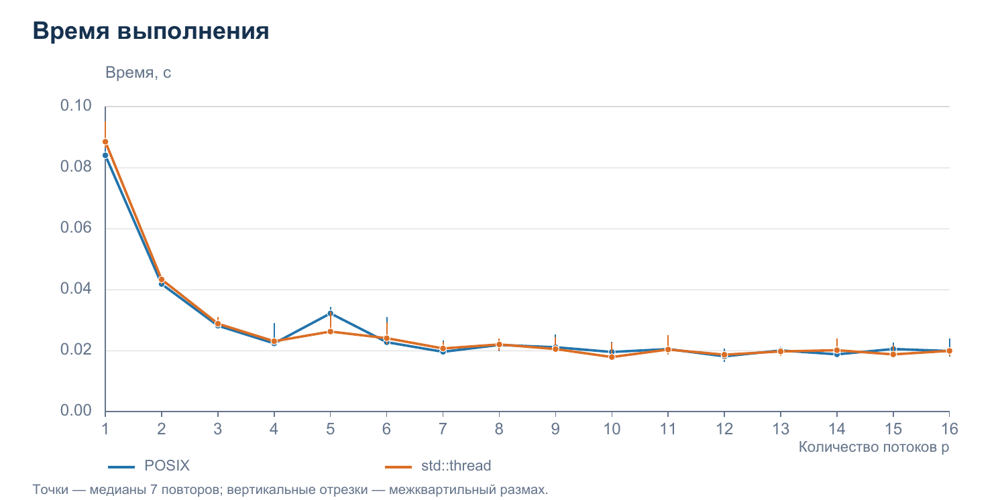
Время резко уменьшается при переходе от одного к нескольким потокам. Минимумы медиан: POSIX — 0.017410 с при p = 12; std::thread — 0.017190 с при p = 10. Неровности после p = 4 согласуются с влиянием распределения нагрузки и фоновых процессов; по этим данным нельзя выделить единственную причину.
9.2 Ускорение
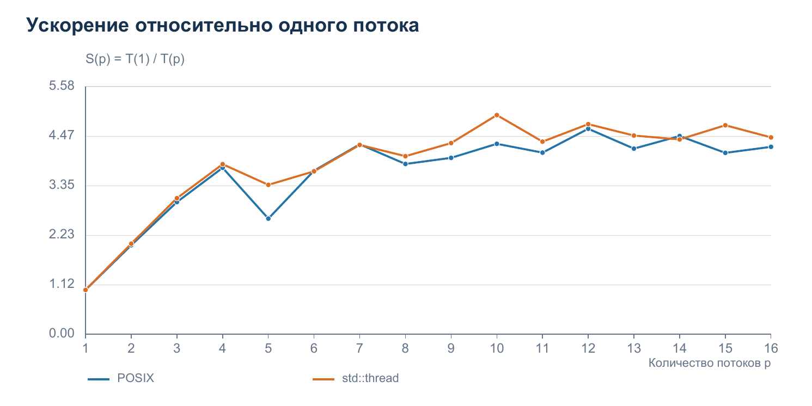
Максимальное измеренное ускорение POSIX равно 4.633, std::thread — 4.941. Ускорение вычислено по собственной однопоточной базе каждого API, поэтому сравнивать технологии по абсолютному времени корректнее, чем только по S(p).
9 Графики эксперимента продолжение
9.3 Эффективность использования потоков
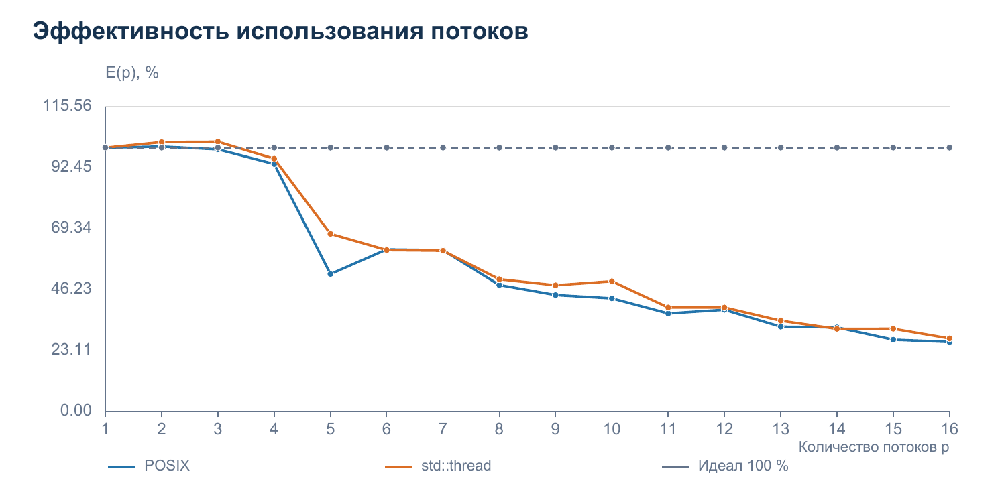
Эффективность близка к 100 % на малом числе потоков и заметно падает при дальнейшем увеличении p. Это означает, что добавление потоков даёт всё меньшую отдачу на один поток; отдельные значения немного выше 100 % объясняются изменчивостью измерений и условий исполнения.
9.4 Результаты вычислений
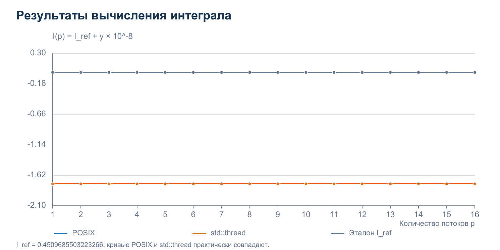
Для всех p используется одна и та же сетка. На графике показано I_N = I_ref + y·10⁻⁸, чтобы наглядно видеть общую ошибку относительно эталона; две технологические кривые практически полностью совпадают. Максимальное различие между записанными результатами равно 5,55·10⁻¹⁷.
9 Графики эксперимента продолжение
9.5 Идеальное и фактическое ускорение
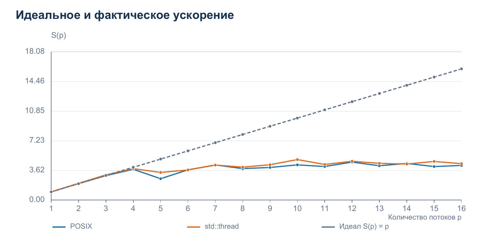
Идеальное ускорение S = p растёт линейно, а фактическое выходит на область насыщения около 4–5. Создание потоков, объединение результатов и ограничения вычислительных ресурсов не масштабируются идеально; при p выше 12 логических потоков возникает также переподписка ресурсов.
9.6 Эффективность относительно идеального ускорения
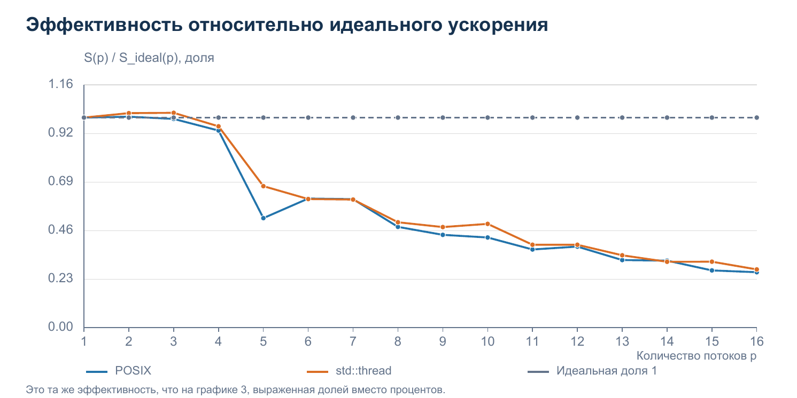
Доля S/S_ideal = S/p показывает, какую часть идеального ускорения даёт конфигурация. Этот показатель математически совпадает с эффективностью из графика 3, выраженной долей вместо процентов; оба графика приведены отдельно согласно заданию.
10 Демонстрация программы
Программа запускается без аргументов для интерактивного ввода N, числа потоков основного вычисления и максимального числа потоков. Для точного повторения эксперимента использован эквивалентный запуск с аргументами:
.\x64\Release\L1pp.exe 20000000 8 16 7 results
Ниже приведены реальные скриншоты браузерного просмотра stdout из results/console.txt. Это представление фактического вывода программы; окно терминала на изображениях не имитируется.
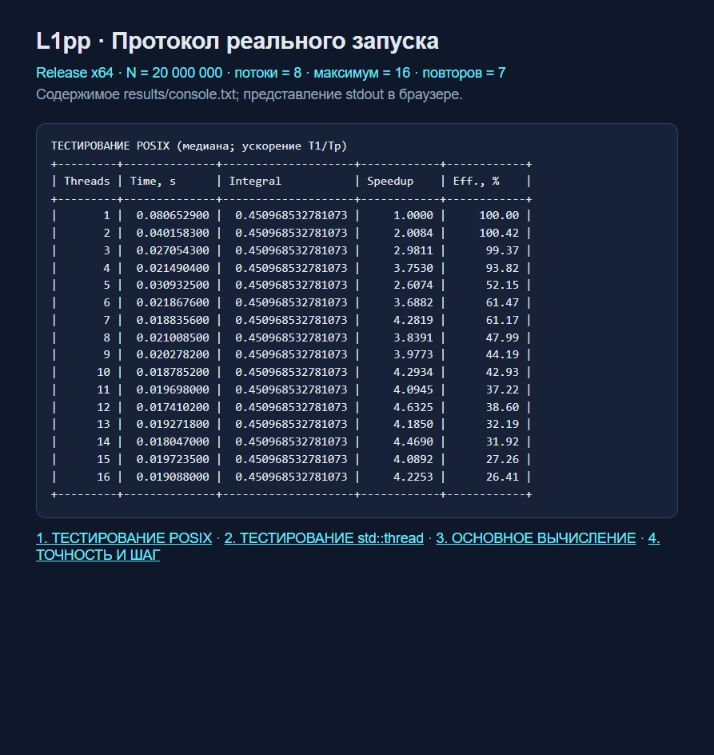
10 Демонстрация программы продолжение
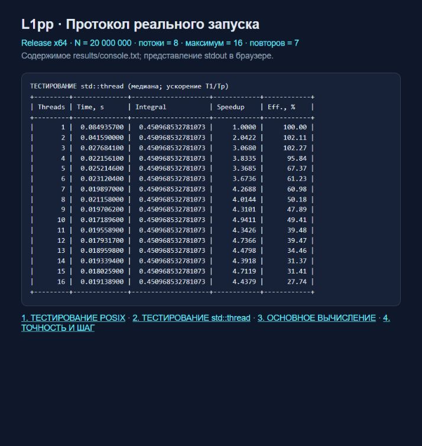
Поля Time, s, Integral, Speedup и Eff., % соответствуют времени, интегралу, ускорению и эффективности. Отдельная таблица следующей страницы сравнивает p = 8 с прямым однопоточным вычислением.
10 Основное вычисление и точность на экране
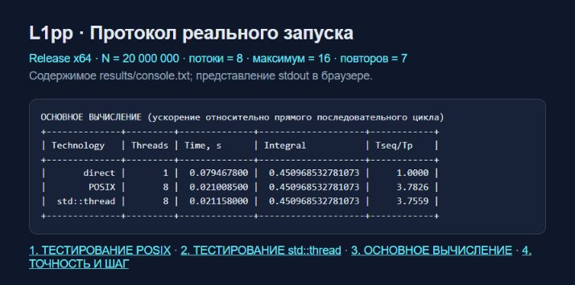
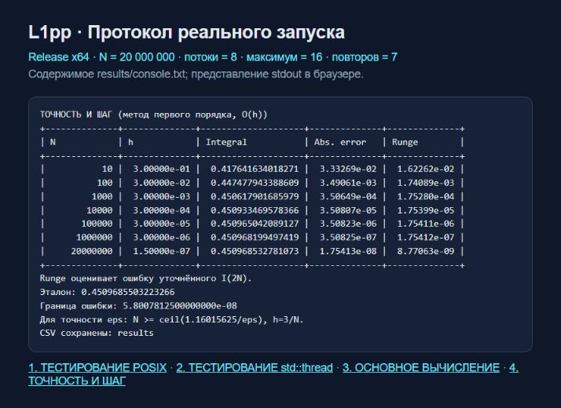
11 Выводы
Эффективность параллелизации
Разделение суммы даёт ускорение до 4.63 для POSIX и 4.94 для std::thread относительно одного рабочего потока. После нескольких потоков рост становится неравномерным, а эффективность падает, поэтому увеличение p само по себе не гарантирует меньшего времени.
Сравнение технологий
При одинаковых восьми потоках POSIX занял 0.0210085 с, std::thread — 0.0211580 с; различие медиан составляет 0.71 %. На фоне разброса это не позволяет объявить один API устойчиво быстрее; std::thread удобнее для типизированной передачи аргументов, а POSIX явно возвращает указатель через join.
Закон Амдала
Модель S(p) = 1 / (s + (1−s)/p) ограничивает ускорение при наличии последовательной доли s. Измеренное насыщение согласуется с последовательными затратами и накладными расходами, но неоднородность ресурсов, частота и планировщик нарушают предпосылки простейшей модели, поэтому по одной кривой нельзя надёжно оценить постоянную долю s.
Точность вычислений
Ошибка правых прямоугольников при N = 20,000,000 равна примерно 1.754e-08, что меньше границы 5.801e-08; удвоение N асимптотически уменьшает ошибку вдвое. Изменение числа потоков даёт различия не более 5,55·10⁻¹⁷, поэтому точность здесь определяется шагом интегрирования, а не API.
Оптимальная конфигурация
По минимальной медиане данного эксперимента оптимальны 12 потоков POSIX и 10 потоков std::thread. Это локальный результат для N = 20,000,000 и текущей нагрузки: для устойчивой рекомендации следует повторить измерения в сопоставимых условиях и сопоставить межквартильные интервалы.
Практическая значимость
Задачи с независимыми слагаемыми удобно распараллеливать через локальные суммы и последующее объединение без блокировок на каждом узле. Полученный подход применим к квадратурам и другим вычислительным суммам, а выбор N по оценке ошибки позволяет не тратить время на избыточную точность.
12 Воспроизведение и источники
Сборка и запуск
PowerShell, из корня проекта: .\build.ps1 .\x64\Release\L1pp.exe Воспроизведение замеров: .\run-experiments.ps1 Проверки: .\x64\Release\L1pp.exe --self-test python scripts/verify.py python scripts/make_report.py
Сборка в Visual Studio: открыть L1pp.slnx, выбрать Release и x64. В проекте настроены include, import library и копирование pthreadVC2.dll рядом с исполняемым файлом. Для генератора отчёта нужны Python, ReportLab, Pillow и Poppler; пути к Poppler можно задать переменной CODEX_PDFTOPPM.
Исходники и GitHub
Полный текст C++ приведён в приложении и находится в папке L1pp. Репозиторий GitHub отсутствует: по прямому указанию заказчика создавать его не требуется, поэтому внешняя ссылка не приводится. Все файлы для последующего размещения включены в комплект работы.
Использованные материалы
1. Условие лабораторной работы и предоставленный скриншот варианта.
2. Pthreads-win32 2.9.1: pthread/Pre-built.2/README, include/pthread.h; комплект библиотек x64 из предоставленной папки pthread.
3. Рабочий проект стандарта C++, конструктор std::thread: eel.is/c++draft/thread.thread.constr. Конструктор принимает вызываемый объект и отдельные аргументы; обычное возвращаемое значение функции потока игнорируется.
4. Собственные экспериментальные данные: results/raw.csv, summary.csv, main.csv, accuracy.csv; проверка — results/verification.json.
Материалы POSIX Threads for Win.pdf и 2026_ПП_Л1.pdf в предоставленной папке отсутствуют. Они не включены в список использованных источников; свойства библиотеки проверены по её локальным заголовкам и README.
Приложение Текст программы
integration.hpp
1 #pragma once
2 #include <cstdint>
3 namespace lab {
4 using Index = std::uint64_t;
5 constexpr double A = 2.0, B = 5.0;
6 constexpr double derivative_bound = 33.0 / 128.0;
7 double function(double x);
8 double partial_sum(Index first, Index last, double a, double h);
9 double sequential(Index n);
10 double posix_integral(Index n, unsigned threads);
11 double std_integral(Index n, unsigned threads);
12 double reference_integral();
13 void validate(Index n, unsigned threads);
14 void range(Index n, unsigned threads, unsigned id, Index& first, Index& last);
15 }Приложение Текст программы
integration.cpp
1 #include "integration.hpp"
2 #include <cmath>
3 #include <stdexcept>
4 namespace lab {
5 double function(double x) {
6 return (1.0 + x * x) / (x * x * x * std::sqrt(2.0 + x));
7 }
8 double partial_sum(Index first, Index last, double a, double h) {
9 // Kahan summation limits roundoff without changing the quadrature rule.
10 double sum = 0.0, correction = 0.0;
11 for (Index i = first; i < last; ++i) {
12 const double value = function(a + static_cast<double>(i + 1) * h);
13 const double y = value - correction;
14 const double next = sum + y;
15 correction = (next - sum) - y;
16 sum = next;
17 }
18 return sum;
19 }
20 void validate(Index n, unsigned threads) {
21 // Internal limit also permits the 2N accuracy check for user N <= 10^12.
22 if (n == 0 || n > 2000000000000ULL)
23 throw std::invalid_argument("Internal N must be in [1, 2*10^12]");
24 if (threads == 0 || threads > 256 || threads > n)
25 throw std::invalid_argument("Threads must be in [1, min(N,256)]");
26 }
27 void range(Index n, unsigned threads, unsigned id, Index& first, Index& last) {
28 // Distribute the remainder: block sizes differ by at most one.
29 const Index q = n / threads, r = n % threads;
30 first = id * q + (id < r ? id : r);
31 last = first + q + (id < r ? 1 : 0);
32 }
33 double sequential(Index n) {
34 validate(n, 1);
35 const double h = (B - A) / static_cast<double>(n);
36 return h * partial_sum(0, n, A, h);
37 }
38 double reference_integral() {
39 const auto primitive = [](double x) {
40 const double t = std::sqrt(x + 2.0), r = std::sqrt(2.0);
41 return 35.0 / (32.0 * r) * std::log((t - r) / (t + r))
42 + t * (3.0 / (16.0 * x) - 1.0 / (4.0 * x * x));
43 };
44 return primitive(B) - primitive(A);
45 }
46 }Приложение Текст программы
posix.cpp
1 #include "integration.hpp"
2 #if defined(_MSC_VER) && _MSC_VER >= 1900
3 #include <time.h>
4 #define HAVE_STRUCT_TIMESPEC
5 #endif
6 #include <pthread.h>
7 #include <iostream>
8 #include <memory>
9 #include <new>
10 #include <stdexcept>
11 #include <string>
12 #include <vector>
13 namespace lab {
14 namespace {
15 struct Arguments { Index first, last; double a, h; };
16 void* worker(void* raw) {
17 const auto& args = *static_cast<Arguments*>(raw);
18 // Heap storage stays valid after this worker returns.
19 auto* result = new (std::nothrow) double;
20 if (result) *result = partial_sum(args.first, args.last, args.a, args.h);
21 return result; // Received by the caller ONLY through pthread_join.
22 }
23 double join_result(pthread_t thread) {
24 void* raw = nullptr;
25 const int code = pthread_join(thread, &raw);
26 if (code != 0) {
27 // Do not unwind storage possibly still used by a live worker.
28 std::cerr << "pthread_join failed: " << code << '\n';
29 std::terminate();
30 }
31 std::unique_ptr<double> value(static_cast<double*>(raw));
32 if (!value) throw std::bad_alloc();
33 return *value;
34 }
35 }
36 double posix_integral(Index n, unsigned threads) {
37 validate(n, threads);
38 const double h = (B - A) / static_cast<double>(n);
39 std::vector<pthread_t> handles(threads);
40 std::vector<Arguments> args(threads);
41 unsigned created = 0;
42 int create_error = 0;
43 for (; created < threads; ++created) {
44 range(n, threads, created, args[created].first, args[created].last);
45 args[created].a = A; args[created].h = h;
46 create_error = pthread_create(&handles[created], nullptr, worker, &args[created]);
47 if (create_error != 0) break;
48 }
49 double sum = 0.0, correction = 0.0;
50 bool allocation_failed = false;
51 for (unsigned t = 0; t < created; ++t) {
52 try {
53 const double y = join_result(handles[t]) - correction;
54 const double next = sum + y;
55 correction = (next - sum) - y; sum = next;
56 } catch (const std::bad_alloc&) {
57 allocation_failed = true; // Join all other workers before throwing.
58 }
59 }
60 if (create_error)
61 throw std::runtime_error("pthread_create failed: " + std::to_string(create_error));
62 if (allocation_failed) throw std::bad_alloc();
63 return sum * h;
64 }
65 }Приложение Текст программы
std_thread.cpp
1 #include "integration.hpp"
2 #include <functional>
3 #include <thread>
4 #include <vector>
5 namespace lab {
6 namespace {
7 // Parameters are passed separately, never bundled in a structure.
8 void worker(Index first, Index last, double a, double h, double& result) {
9 result = partial_sum(first, last, a, h);
10 }
11 }
12 double std_integral(Index n, unsigned threads) {
13 validate(n, threads);
14 const double h = (B - A) / static_cast<double>(n);
15 std::vector<double> results(threads);
16 std::vector<std::thread> handles;
17 handles.reserve(threads);
18 try {
19 for (unsigned t = 0; t < threads; ++t) {
20 Index first, last;
21 range(n, threads, t, first, last);
22 handles.emplace_back(worker, first, last, A, h, std::ref(results[t]));
23 }
24 } catch (...) {
25 for (auto& thread : handles) thread.join();
26 throw;
27 }
28 for (auto& thread : handles) thread.join();
29 double sum = 0.0, correction = 0.0;
30 for (double value : results) {
31 const double y = value - correction;
32 const double next = sum + y;
33 correction = (next - sum) - y; sum = next;
34 }
35 return h * sum;
36 }
37 }Приложение Текст программы
main.cpp
1 #include "integration.hpp"
2 #include <algorithm>
3 #include <chrono>
4 #include <cmath>
5 #include <filesystem>
6 #include <fstream>
7 #include <iomanip>
8 #include <iostream>
9 #include <random>
10 #include <stdexcept>
11 #include <string>
12 #include <thread>
13 #include <vector>
14 #ifdef _WIN32
15 #include <windows.h>
16 #endif
17
18 namespace {
19 using lab::Index;
20 using Clock = std::chrono::steady_clock;
21 using Integrator = double (*)(Index, unsigned);
22 struct Sample { double seconds, value; };
23 struct Row { int api; unsigned threads; double seconds, value, speedup, efficiency; };
24
25 Index number(const std::string& text) {
26 if (text.empty() || text.find_first_not_of("0123456789") != std::string::npos)
27 throw std::invalid_argument("Expected a positive integer: " + text);
28 const Index value = std::stoull(text);
29 if (value == 0) throw std::invalid_argument("Expected a positive integer");
30 return value;
31 }
32 Index input(const char* prompt) {
33 std::cout << prompt << std::flush;
34 std::string line;
35 if (!std::getline(std::cin, line)) throw std::runtime_error("Input ended");
36 return number(line);
37 }
38 Sample timed(Integrator integrate, Index n, unsigned p) {
39 const auto start = Clock::now();
40 const double value = integrate(n, p);
41 const auto stop = Clock::now();
42 return {std::chrono::duration<double>(stop - start).count(), value};
43 }
44 double serial_adapter(Index n, unsigned) { return lab::sequential(n); }
45 Sample median(std::vector<Sample> values) {
46 std::sort(values.begin(), values.end(), [](Sample a, Sample b) {
47 return a.seconds < b.seconds;
48 });
49 return values[values.size() / 2];
50 }
51 void line() {
52 std::cout << "+---------+--------------+--------------------+------------+------------+\n";
53 }
54 void table(const std::string& title, const std::vector<Row>& rows, int api) {
55 std::cout << '\n' << title << '\n';
56 line();
57 std::cout << "| Threads | Time, s | Integral | Speedup | Eff., % |\n";
58 line();
59 for (const auto& r : rows) if (r.api == api) {
60 std::cout << "| " << std::setw(7) << r.threads << " | "
61 << std::fixed << std::setprecision(9) << std::setw(12) << r.seconds << " | "
62 << std::setprecision(15) << std::setw(18) << r.value << " | "
63 << std::setprecision(4) << std::setw(10) << r.speedup << " | "
64 << std::setprecision(2) << std::setw(10) << r.efficiency << " |\n";
65 }
66 line();
67 }
68 void self_test() {
69 const double ref = lab::reference_integral();
70 for (Index n : {Index(1), Index(2), Index(7), Index(31), Index(1000), Index(10000)}) {
71 const double serial = lab::sequential(n);
72 if (!(serial < ref && ref - serial <= 1.16015625 / static_cast<double>(n)))
73 throw std::runtime_error("Quadrature bound failed");
74 for (unsigned p = 1; p <= std::min<Index>(n, 8); ++p) {
75 Index previous = 0;
76 for (unsigned t = 0; t < p; ++t) {
77 Index first, last;
78 lab::range(n, p, t, first, last);
79 if (first != previous || last <= first)
80 throw std::runtime_error("Partition failed");
81 previous = last;
82 }
83 if (previous != n) throw std::runtime_error("Coverage failed");
84 for (auto fn : {lab::posix_integral, lab::std_integral})
85 if (std::abs(fn(n, p) - serial) > 2e-14)
86 throw std::runtime_error("Parallel sum failed");
87 }
88 }
89 const double e1 = ref - lab::sequential(1000), e2 = ref - lab::sequential(2000);
90 if (e1 / e2 < 1.99 || e1 / e2 > 2.01) throw std::runtime_error("Order test failed");
91 for (auto pair : {std::pair<Index,unsigned>{0,1}, {1,0}, {2,3}, {1000,257}}) {
92 bool rejected = false;
93 try { lab::validate(pair.first, pair.second); }
94 catch (const std::invalid_argument&) { rejected = true; }
95 if (!rejected) throw std::runtime_error("Validation failed");
96 }
97 std::cout << "PASS: partition, POSIX, std::thread, error bound, convergence, invalid inputs.\n";
98 }
99 }
100
101 int main(int argc, char** argv) {
102 #ifdef _WIN32
103 SetConsoleOutputCP(CP_UTF8);
104 SetConsoleCP(CP_UTF8);
105 #endif
106 try {
107 if (argc == 2 && std::string(argv[1]) == "--self-test") { self_test(); return 0; }
108 if (argc == 2 && std::string(argv[1]) == "--help") {
109 std::cout << "L1pp [N main_threads max_threads [odd_repeats [output_dir]]]\n"
110 "No arguments: interactive input. --self-test: correctness checks.\n";
111 return 0;
112 }
113 if (argc != 1 && (argc < 4 || argc > 6)) throw std::invalid_argument("Use --help");
114 std::cout << "ЛАБОРАТОРНАЯ РАБОТА 1. ПРАВЫЕ ПРЯМОУГОЛЬНИКИ\n"
115 "f(x) = (1+x^2)/(x^3*sqrt(2+x)), [2,5]\n";
116 const Index n = argc > 1 ? number(argv[1]) : input("Количество разбиений N: ");
117 if (n > 1000000000000ULL) throw std::invalid_argument("N must be in [1, 10^12]");
118 const Index main_input = argc > 1 ? number(argv[2]) : input("Потоки основного вычисления: ");
119 const Index max_input = argc > 1 ? number(argv[3]) : input("Максимум потоков для тестирования:
");
120 const Index repeats_input = argc > 4 ? number(argv[4]) : 5;
121 if (main_input > 256 || max_input > 256)
122 throw std::invalid_argument("Maximum allowed threads: 256");
123 if (repeats_input > 99 || repeats_input % 2 == 0)
124 throw std::invalid_argument("Repeats must be odd and in [1,99]");
125 const unsigned main_p = static_cast<unsigned>(main_input);
126 const unsigned max_p = static_cast<unsigned>(max_input);
127 const unsigned repeats = static_cast<unsigned>(repeats_input);
128 lab::validate(n, main_p); lab::validate(n, max_p);
129 const std::filesystem::path output = argc > 5 ? argv[5] : "results";
130 std::filesystem::create_directories(output);
131 std::ofstream raw(output / "raw.csv"), summary(output / "summary.csv"),
132 main_csv(output / "main.csv"), accuracy(output / "accuracy.csv"),
133 metadata(output / "metadata.txt");
134 if (!raw || !summary || !main_csv || !accuracy || !metadata)
135 throw std::runtime_error("Cannot create output files");
136 raw << "technology,threads,repeat,seconds,result\n" << std::setprecision(17);
137 summary << "technology,threads,seconds,result,speedup,efficiency_percent\n"
138 << std::setprecision(17);
139 main_csv << "technology,threads,seconds,result,speedup_vs_direct\n"
140 << std::setprecision(17);
141 accuracy << "n,h,result,absolute_error,relative_error,runge_estimate,bound,observed_order\n"
142 << std::setprecision(17);
143 const double h = 3.0 / static_cast<double>(n);
144 const double reference = lab::reference_integral();
145 std::cout << "\nN=" << n << "; h=" << std::scientific << h << "; main=" << main_p
146 << "; max=" << max_p << "; repeats=" << repeats << "; hardware="
147 << std::thread::hardware_concurrency() << "\n";
148 metadata << "N=" << n << "\nmain_threads=" << main_p << "\nmax_threads=" << max_p
149 << "\nrepeats=" << repeats << "\nhardware_threads="
150 << std::thread::hardware_concurrency()
151 << "\nclock=steady_clock\nstatistic=median\nwarmup=one_per_configuration\n"
152 << "shuffle_seed=412\ntiming=allocation+creation+computation+join+reduction\n";
153 Integrator functions[] = {lab::posix_integral, lab::std_integral};
154 const char* names[] = {"POSIX", "std::thread"};
155 for (auto fn : functions)
156 for (unsigned p = 1; p <= max_p; ++p) (void)fn(n, p);
157 (void)lab::sequential(n);
158 std::vector<Sample> serial_samples;
159 std::vector<std::vector<std::vector<Sample>>> samples(2,
160 std::vector<std::vector<Sample>>(max_p + 1));
161 std::vector<std::pair<int, unsigned>> schedule;
162 for (int api = 0; api < 2; ++api)
163 for (unsigned p = 1; p <= max_p; ++p) schedule.emplace_back(api, p);
164 std::mt19937 generator(412);
165 for (unsigned repeat = 1; repeat <= repeats; ++repeat) {
166 std::shuffle(schedule.begin(), schedule.end(), generator);
167 const auto direct = timed(serial_adapter, n, 1);
168 serial_samples.push_back(direct);
169 raw << "direct,1," << repeat << ',' << direct.seconds << ',' << direct.value << '\n';
170 for (auto config : schedule) {
171 const auto s = timed(functions[config.first], n, config.second);
172 samples[config.first][config.second].push_back(s);
173 raw << names[config.first] << ',' << config.second << ',' << repeat
174 << ',' << s.seconds << ',' << s.value << '\n';
175 }
176 std::cout << "Повтор " << repeat << '/' << repeats << " завершён.\n" << std::flush;
177 }
178 const auto direct = median(serial_samples);
179 std::vector<Row> rows;
180 for (int api = 0; api < 2; ++api) {
181 const double baseline = median(samples[api][1]).seconds;
182 for (unsigned p = 1; p <= max_p; ++p) {
183 const auto s = median(samples[api][p]);
184 const double speed = baseline / s.seconds, eff = 100.0 * speed / p;
185 rows.push_back({api, p, s.seconds, s.value, speed, eff});
186 summary << names[api] << ',' << p << ',' << s.seconds << ',' << s.value
187 << ',' << speed << ',' << eff << '\n';
188 }
189 table(std::string("ТЕСТИРОВАНИЕ ") + names[api] + " (медиана; ускорение T1/Tp)", rows, api);
190 }
191 std::cout << "\nОСНОВНОЕ ВЫЧИСЛЕНИЕ (ускорение относительно прямого последовательного цикла)\n"
192 "+--------------+---------+--------------+--------------------+------------+\n"
193 "| Technology | Threads | Time, s | Integral | Tseq/Tp |\n"
194 "+--------------+---------+--------------+--------------------+------------+\n";
195 const auto main_row = [&](const char* name, unsigned p, Sample s) {
196 const double speed = direct.seconds / s.seconds;
197 std::cout << "| " << std::setw(12) << name << " | " << std::setw(7) << p << " | "
198 << std::fixed << std::setprecision(9) << std::setw(12) << s.seconds << " | "
199 << std::setprecision(15) << std::setw(18) << s.value << " | "
200 << std::setprecision(4) << std::setw(10) << speed << " |\n";
201 main_csv << name << ',' << p << ',' << s.seconds << ',' << s.value << ',' << speed << '\n';
202 };
203 main_row("direct", 1, direct);
204 for (int api = 0; api < 2; ++api) {
205 Sample s{};
206 if (main_p <= max_p) s = median(samples[api][main_p]);
207 else {
208 (void)functions[api](n, main_p);
209 std::vector<Sample> extra;
210 for (unsigned r = 1; r <= repeats; ++r) {
211 const auto run = timed(functions[api], n, main_p);
212 extra.push_back(run);
213 raw << names[api] << ',' << main_p << ',' << r << ','
214 << run.seconds << ',' << run.value << '\n';
215 }
216 s = median(extra);
217 }
218 main_row(names[api], main_p, s);
219 }
220 std::cout << "+--------------+---------+--------------+--------------------+------------+\n";
221 std::cout << "\nТОЧНОСТЬ И ШАГ (метод первого порядка, O(h))\n"
222
"+--------------+--------------+--------------------+--------------+--------------+\n"
223 "| N | h | Integral | Abs. error | Runge
|\n"
224
"+--------------+--------------+--------------------+--------------+--------------+\n";
225 std::vector<Index> sizes = {10, 100, 1000, 10000, 100000, 1000000, n};
226 std::sort(sizes.begin(), sizes.end());
227 sizes.erase(std::unique(sizes.begin(), sizes.end()), sizes.end());
228 for (Index size : sizes) {
229 const double coarse = lab::sequential(size), fine = lab::sequential(2 * size);
230 const double err = std::abs(reference - coarse);
231 const double fine_err = std::abs(reference - fine);
232 const double runge = std::abs(fine - coarse); // estimate for I_(2N), order 1
233 accuracy << size << ',' << 3.0 / static_cast<double>(size) << ',' << coarse << ',' << err <<
','
234 << err / std::abs(reference) << ',' << runge << ','
235 << 1.16015625 / static_cast<double>(size) << ',' << std::log2(err / fine_err) <<
'\n';
236 std::cout << "| " << std::setw(12) << size << " | " << std::scientific <<
std::setprecision(5)
237 << std::setw(12) << 3.0 / static_cast<double>(size) << " | " << std::fixed
238 << std::setprecision(15) << std::setw(18) << coarse << " | " << std::scientific
239 << std::setprecision(5) << std::setw(12) << err << " | "
240 << std::setw(12) << runge << " |\n";
241 }
242 std::cout <<
"+--------------+--------------+--------------------+--------------+--------------+\n"
243 << "Runge оценивает ошибку уточнённого I(2N).\nЭталон: " << std::fixed
244 << std::setprecision(16) << reference << "\nГраница ошибки: " << std::scientific
245 << 1.16015625 / static_cast<double>(n)
246 << "\nДля точности eps: N >= ceil(1.16015625/eps), h=3/N.\nCSV сохранены: "
247 << output.string() << '\n';
248 return 0;
249 } catch (const std::exception& e) {
250 std::cerr << "ERROR: " << e.what() << '\n';
251 return 1;
252 }
253 }